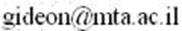
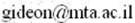

Prof. Gideon Dror
School of Computer Sciences
Tel-Aviv-Yaffo Academic College
2 Rabenu Yerucham St., Tel-Aviv Yaffo 61083, ISRAEL
Phone: +972 3 6803393
Fax: +972 3 680 3342
CS school homepage

Research
Major Research Interests
Machine learning applications in bioinformatics, psychology medicine, machine vision, activity recognition, marketing and high energy physics.
Natural language processing, text categorization.
Feature selection and model selection for supervised categorization and regression.
Large scale machine learning, big-data analysis.
Machine learning competitions.
Journal and Conference Publications
List of publications in Google scholar
Self (un)maintained Publications
Datasets
MTURK-771: word semantic relatedness dataset
Curriculum Vitae
pdf format
,
with list of publications
Contact Information

2 Rabeinu Yerucham St., Jaffa, TEL-AVIV 61083, ISRAEL
Phone: +972 3 6803393
Fax: +972 3 680 3342